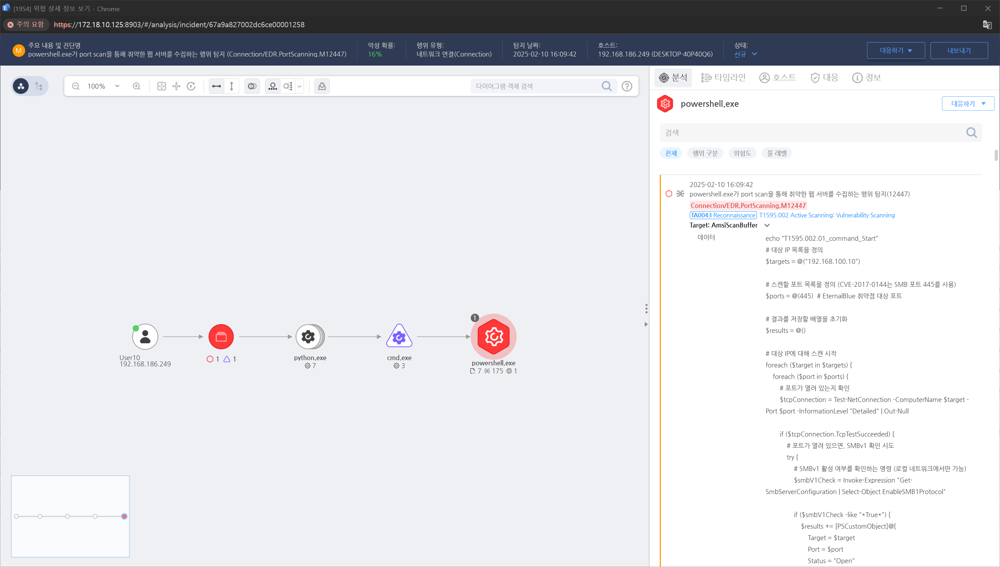

MITRE ATT&CK 액션을 기준으로 대응 방안을 작성

https://172.18.10.125:8903/#/analysis/incident/67a9a827002dc6ce00001258
IDS/IPS (예: Snort, Suricata)에서 비정상적인 포트 스캔 탐지 및 차단
보안 로그를 실시간 분석하여 과도한 네트워크 요청 감지
방화벽에서 비인가 IP 주소의 스캐닝 차단 (Fail2Ban, CrowdSec 활용)
불필요한 포트 및 서비스 비활성화 (netstat -ano 또는 ss -tulnp 확인)
서버 및 애플리케이션 최신 보안 패치 적용
공개된 API 및 웹 애플리케이션의 접근 제어 강화
DMZ 및 내부 네트워크에 대한 접근 통제 (Zero Trust 보안 모델 적용)
WAF(Web Application Firewall) 적용 (예: ModSecurity, AWS WAF, Cloudflare WAF)
OWASP Top 10 기반 보안 점검 수행
의심스러운 HTTP 요청 차단 (예: sqlmap 패턴 감지 및 차단)
공격자보다 먼저 조직 내부에서 정기적인 취약점 스캐닝 수행
실시간 로그 분석 및 경고 시스템 구축 (SIEM 활용)
공격자 IP 블랙리스트 업데이트 및 자동 차단 (Threat Intelligence 활용)
Action 실행시 함께 영향을 받는 다른 Techniqes
| ATT&CK |
|---|
| T1595.002.01 |
|D3FEND| |:-----------:|